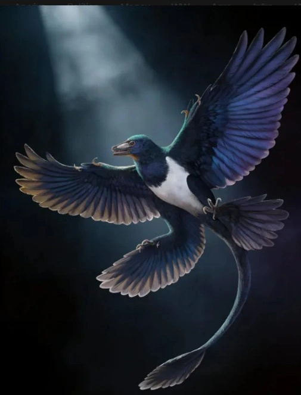
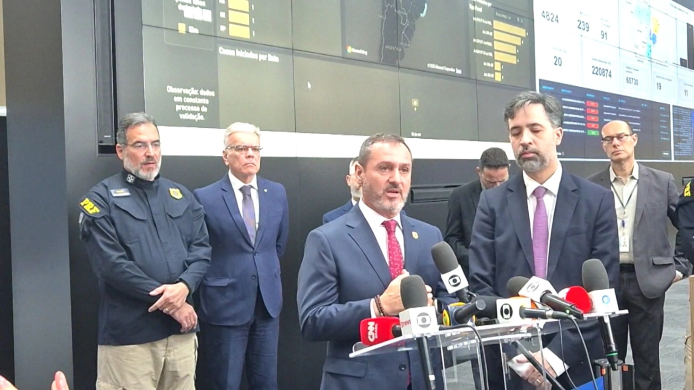
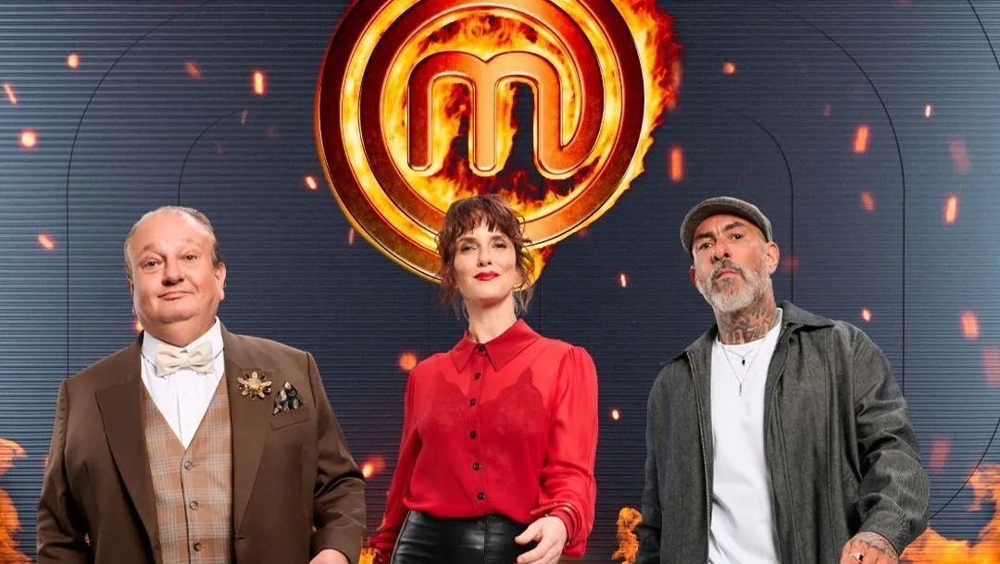

últimas notícias
Ver todas
Cientistas descobrem nova espécie de dinossauro com penas no nordeste da China
Predador media cerca de 57 cm e viveu há mais de 120 milhões de anos
há 1 hora
Terremoto de magnitude 5 atinge a Venezuela, segundo agência dos EUA
Tremor teve epicentro no oceano, próximo à Península de Parla
há 2 horas
PF prende três suspeitos de compra de votos no Estado de Roraima
Após receber denúncias, agentes localizam boca de urna
há 3 horas

Diretor da PF diz que não há riscos para embaixadas em Brasília
Investigação foi aberta após alerta de ameaça
há 4 horas
Programas da TV Band
Ver programaçãoBrasil Urgente
Seg a Sex º 16h00
As notícias em tempo real,
com credibilidade e agilidade

MasterChef Brasil
Ter a Qui º 22h30
Os melhores cozinheiros do Brasil
disputam o grande prêmio
Jornal da Band
Seg a Sex º 19h20
O principal telejornal da Band,
com as notícias do Brasil e do mundo.
Perrengue na Band
Sab º 20h30
Humor, desafios e muitas
aventuras em equipe.
Assista à Band ao vivo
Acompanhe nossa programação em tempo real,
no seu computador, celular ou smart TV.
BAND
Canais
🟡 BAND
🔵 BAND SPORTS
🟣 BAND NEWS
🟢 BAND INTERNACIONAL
Veja as melhores noticias na integra
Esportes, saúde, política e mundo
Apresentado pelo dignissimo Roberto Cabrini
De segunda a sexta-feira
19:00 - 21:00